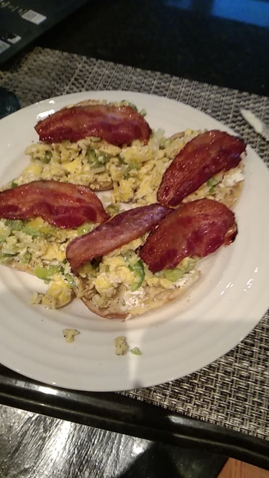

Brad's eggs (better than they look)

Description
Eggs don't get better than this.
Ingredients
- 3 eggs
- bacon
- 1/4 onion
- 1/2 green pepper
- 2 english muffins
- cream cheese
- brown sugar
- butter
Steps
- Cover a plate with parchment paper and lay bacon on top of it strips not touching eachother
- Sprinkle brown sugar on bacon
- Heat oven to 400f and put plate in. Set timer 7 1/2 minutes
- Chop up onion and green pepper into fine pieces
- Cut english muffins in half and prepare them for the toaster (but not yet)
- Heat a pan with butter so that it can be used when timer goes off
- When time goes off, take plate out of oven and flip all bacon, return to oven and set a new alarm for the same time
- Crack 3 eggs into heated pan not on the burner
- Turn burner to max heat
- Alternate pan on burner and pan off burner every 10 seconds, constantly stirring (don't let the eggs sit)
- When eggs begin to solidify (this will happen quickly), remove from burner and add cold cream cheese to cool them off. Mix
- Add diced onion and green pepper. Spice to taste w salt and pepper
- Place english muffins in toaster
- Return to alternating 10 seconds on and off burner until desired consistency is reached (earlier is better)
- Once english muffins pops, spread cream cheese, then spread eggs
- The timer should be done right about now. So take your bacon out of the oven and place the strips on the eggs
- This was probably intense, but if you kept up it was worth it. Enjoy!